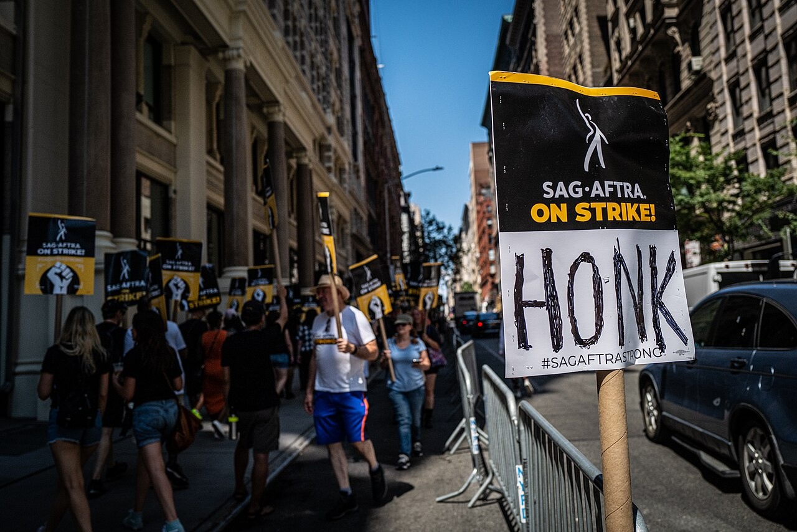

Executive Summary
AI 자동화 담론은 대부분 "누가 일자리를 잃는가"에 머물러 있다. 그런데 미국 노동 데이터를 두 축으로 겹쳐 보면 더 구조적인 어긋남이 드러난다 — 자동화에 가장 크게 노출된 직군일수록, 협상 테이블을 가질 확률은 가장 낮다. 미 노동통계국(BLS) 2025년 집계에서 컴퓨터·수학 직군의 노조 대표율은 4.4%인 반면, AI 노출이 낮은 교육 직군은 35.9%다. 이 리포트는 노출도(exposure)와 보호율(union representation)을 한 지도 위에 겹쳐, 방패가 어디에 몰려 있는지를 좌표로 확인한다.
음의 상관은 실재한다. 다만 범위를 정직하게 밝혀야 한다. 22개 직군 대분류 전체로는 상관이 약하지만(r≈−0.16), 훅이 실제로 겨냥하는 전문직 슈퍼그룹으로 좁히면 뚜렷해진다(r≈−0.70). 시장의 자율 협상으로 이 공백이 메워지지 않기에 규제가 그 빈자리로 움직인다 — 캘리포니아 행정명령 N-6-26(2026-05-21 서명)은 "조직화된 사업장에서 단체교섭이 AI를 어떻게 다루는지"를 검토 대상으로 명시했다. 조직화되지 않은 나머지 직군에는 아직 그 문장조차 없다.
이 작업의 핵심은 데이터 정합성이다. 노출 지수는 방법론마다 순위가 흔들리고(같은 O*NET 데이터를 다른 AI 모델로 재채점하면 "고노출 직군" 비중이 19배까지 벌어진다), 노출은 직군 축인데 훅의 "금융 1.1%"는 산업 축이라 애초에 다른 좌표계다. 두 데이터를 겹치려면 분류체계부터 정렬해야 한다. 정책 공백을 지도화한다는 것은, 바로 그 정렬 작업이다.
4.4% vs 35.9%
컴퓨터·수학 vs 교육 대표율
노출 최상위 직군이 노출 하위 직군의 1/8 수준 보호
약 4,620만 명
협상 테이블 밖의 화이트칼라
노출 상위 5개 직군 종사자의 93.3% (본 리포트 산출)
19배
노출 지수 재채점 편차
같은 데이터, 다른 모델 → 고노출 비중 2.7%~51.5%
101,743건
2026 상반기 AI 지목 감원
2025년 연간 전체(54,836건)의 거의 2배 (Challenger)
어긋남의 지도 — 노출과 보호는 서로 다른 곳을 본다
지도는 두 축으로 그린다. 가로축에는 "AI가 그 직군의 일을 이론적으로 얼마나 대체할 수 있는가"(노출도)를, 세로축에는 "그 직군이 노조의 협상 테이블을 얼마나 갖고 있는가"(대표율)를 놓았다. 원의 크기는 종사자 수다. 그러면 두 축은 서로 다른 곳을 가리킨다. 오른쪽 아래, 노출은 높은데 보호는 낮은 사분면에 컴퓨터·수학, 경영·재무, 경영관리, 사무행정, 법률 같은 화이트칼라 전문직이 빽빽하게 모여 있다. 반대로 왼쪽 위, 노출은 낮은데 보호는 높은 자리에는 교육과 공공안전이 홀로 떨어져 있다.
이 그림이 이 리포트의 한 문장이다. 방패는 가장 필요 없는 곳에 몰려 있다. AI가 업무의 94%를 이론적으로 대체할 수 있다고 평가되는 컴퓨터·수학·경영재무 직군의 노조 대표율은 4~6%대에 그치는 반면, 노출도가 그 3분의 2에 불과한 교육 직군은 35.9%가 협상 테이블 안에 있다. 노출과 보호가 같은 방향을 봤다면 오른쪽 위나 왼쪽 아래로 점들이 늘어섰을 텐데, 실제 데이터는 대각선 반대로 흩어진다.
1.122개 직군을 좌표로 옮기면
아래는 그림의 원본 데이터다. 노출도가 높은 순으로 정렬했고, 오른쪽 두 열이 노조 대표율과 고용 규모다. 상위 다섯 줄(음영)이 노출 최상위 화이트칼라이고, 그들의 대표율이 하나같이 한 자릿수라는 점을 눈으로 확인할 수 있다.
| 직군 (BLS 대분류) | 이론적 AI 노출도 | 노조 대표율 | 고용 규모 |
|---|---|---|---|
| 컴퓨터·수학 | 94.3% | 4.4% | 651만 |
| 경영·재무 | 94.3% | 5.8% | 908만 |
| 경영관리 | 91.3% | 5.0% | 1,655만 |
| 사무·행정 | 90.0% | 9.9% | 1,576만 |
| 법률 | 89.0% | 8.5% | 160만 |
| 공학 | 84.8% | 7.7% | 359만 |
| 예술·디자인·미디어 | 83.7% | 7.6% | 239만 |
| 생명·물리·사회과학 | 77.0% | 12.7% | 179만 |
| 판매 | 62.0% | 3.1% | 1,221만 |
| 교육 | 61.7% | 35.9% | 937만 |
| 보건 전문·기술 | 59.9% | 13.5% | 975만 |
| 공공안전 | 31.6% | 34.1% | 333만 |
| 운송·물류 | 12.1% | 14.1% | 1,108만 |
| 건설·채굴 | 16.9% | 17.4% | 685만 |
데이터 주의 노출도 열은 원 논문(Eloundou·AIOE)이 대분류 평균표를 제공하지 않아 Anthropic 2026-03 자료(대분류 1:1 대응)를 사용했다. 이 대체 자체가 뒤(섹션 5)에서 다룰 데이터 정합성 문제의 실제 사례다. 표는 22개 대분류 중 대표 14개만 발췌했다. 노조 대표율의 2025년 값은 10월 연방정부 셧다운으로 해당 월 CPS 조사가 빠져 11개월 평균으로 산출됐다는 점도 밝혀 둔다 — 과거 연도와 완전히 같은 방식의 비교는 아니다.
1.2상관은 실재하되, 범위를 좁혀야 뚜렷하다
음의 상관을 숫자로 재면 정직해질 필요가 있다. 22개 대분류 전체로 노출도와 대표율의 피어슨 상관계수를 계산하면 r≈−0.16이다. 방향은 가설과 같은 음(陰)이지만 약하다. 공공안전(노출 31.6%인데 대표율 34.1%)과 교육(노출 61.7%에 대표율 35.9%)처럼 공공부문 특유의 고조직화가 저노출·고보호 쪽으로 강하게 끌어당기고, 판매·운송 같은 저노출·저보호 직군도 있어 선이 깨끗하지 않다.
그런데 훅이 실제로 비교하는 대상, 즉 경영·전문직 슈퍼그룹 10개 대분류로 좁히면 r≈−0.70으로 뚜렷해진다. 즉 "전체 노동시장에서 노출과 보호가 반비례한다"고 말하면 과장이지만, "전문직 내부에서 노출이 클수록 보호가 얇다"고 한정하면 데이터가 분명히 지지한다. 다만 이 10개군 분석은 표본이 작고(n=10) 교육이라는 한 점의 영향력이 커서, 교육을 빼면 상관이 약해질 여지가 있다. 상관계수는 본 리포트가 직접 계산한 재현 가능한 값이며, 유의성 검정(p-value)은 수행하지 않았다.
지도의 결론은 단정이 아니라 정렬이다. 노출과 보호를 한 좌표계에 겹치면, 위험이 가장 큰 자리에 완충장치가 가장 없다는 구조가 시각적으로 드러난다. 그 구조를 과장하지 않으려면 "전문직 내부"라는 범위와 "직접 계산한 상관"이라는 한계를 함께 적어야 한다. 그것이 데이터로 정책 공백을 지도화하는 첫 규칙이다.
노출을 재는 잣대는 하나가 아니다
섹션 1의 가로축은 "AI 노출도"라는 한 단어로 뭉뚱그려져 있었다. 그러나 이 축은 사실 여러 방식으로 잰 서로 다른 숫자다. 노출도를 재는 대표적 방법이 넷 있고, 그 넷은 같은 직군을 놓고도 다른 순위를 매긴다. 이 리포트가 노출도를 확정 점수처럼 쓰지 않고 "방향"으로만 읽는 이유가 여기 있다.
2.1네 가지 노출 지수, 네 가지 렌즈
네 방식은 각자 다른 것을 본다. Eloundou 외의 "GPTs are GPTs"(2023, Science 2024)는 O*NET 태스크 하나하나가 LLM으로 얼마나 대체 가능한지를 사람과 GPT-4가 함께 채점한다. 미국 노동력의 약 80%가 업무의 10% 이상에서 LLM 영향을 받을 수 있다는 결론이 여기서 나왔다. Felten·Raj·Seamans의 AIOE(2021)는 AI가 잘하는 응용 영역과 직무가 요구하는 능력을 매칭해 노출을 계산한다. Webb(2020)은 특허 텍스트와 직무 설명의 어휘 중첩으로 노출을 잰다. Anthropic Economic Index는 이론이 아니라 실제 Claude 대화 로그에서 관측된 사용 비율을 쓴다.
방향은 대체로 수렴한다. 컴퓨터·수학과 사무직이 상위, 교육과 육체노동이 하위라는 순서는 네 지수가 대체로 동의한다. 한 후속 연구는 자체 측정치와 AIOE의 순위 상관(Spearman ρ)이 0.84에 이른다고 보고했다. 문제는 세부, 특히 금융이다.
2.2금융은 지수에 따라 최상위와 최하위를 오간다
같은 금융 직군이 어떤 지수에서는 노출 최상위권으로, 다른 지수에서는 최하위권으로 분류된다. Felten의 AIOE는 금융심사관·애널리스트처럼 정보처리 비중이 큰 금융 직무를 노출 최상위로 올린다. 반대로 Webb의 특허 기반 방식은 금융·보험을 최하위 그룹으로 내린다. 특허로 잘 표현되지 않는 노동이기 때문이다. 두 지수의 노출도 상관은 0.31로 낮다. "금융이 AI에 얼마나 노출됐는가"라는 질문의 답이 방법론에 따라 정반대로 갈린다.
| 지수 | 측정 방식 | 금융 직군의 위치 |
|---|---|---|
| Eloundou (GPTs are GPTs) | O*NET 태스크의 LLM 대체가능성 (사람·GPT-4 채점) | 상위권 (정보처리 태스크 다수) |
| Felten AIOE | AI 응용 × 직무 능력 매칭 | 최상위권 |
| Webb (특허 기반) | 특허 텍스트 × 직무 텍스트 중첩 | 최하위 그룹 |
| Anthropic (실사용) | 실제 Claude 대화·API 로그 관측 | 중위권 (실사용 28.4%) |
2.3같은 데이터, 다른 모델 — 19배로 벌어지는 판정
지수 간 차이만이 아니다. 한 지수 안에서도 채점 모델을 바꾸면 결과가 요동친다. 노출 지수의 신뢰도를 정면으로 검증한 최근 연구(arXiv:2606.23633)는 같은 O*NET 태스크 데이터를 Gemini·GPT-4·Claude 4.5·GPT-5로 각각 재채점했다. 그러자 "고노출 직군"으로 판정되는 비율이 2.7%에서 51.5%까지, 약 19배 벌어졌다. 노출도라는 숫자가 데이터가 아니라 채점자(모델)에 상당 부분 의존한다는 뜻이다.
같은 입력에 채점 모델만 바꿔도 고노출 비중이 2.7%↔51.5%로 19배 벌어진다. 노출 점수를 소수점까지 확정된 사실처럼 인용하면, 사실은 채점자의 취향을 인용하는 셈이 된다. 이 리포트가 노출을 "방향"으로만 읽고 확정 점수로 쓰지 않는 이유다.
2.4실사용 데이터가 노출 방향을 가장 강하게 뒷받침한다
이론 지수가 흔들리는 만큼, 실제 사용 데이터의 무게가 커진다. Anthropic Economic Index(2026)에 따르면 컴퓨터·수학 관련 태스크가 Claude.ai 대화의 34%, 엔터프라이즈 API 사용의 44~46%를 차지한다. 이 직군이 전체 고용의 약 4%에 불과하다는 점을 감안하면, 사용 집중도가 고용 비중의 9~12배에 이른다. 이론적 노출이 아니라 지금 실제로 AI가 하고 있는 일을 관측한 값이라 신뢰도가 높다.
다만 같은 데이터가 반대 방향의 신호도 준다. 컴퓨터·수학의 이론적 노출은 94.3%인데 실사용 노출은 35.8%다. 2.5~3배의 갭이 남아 있다. "AI가 할 수 있는 것"과 "AI가 실제로 하고 있는 것"의 거리다. 이 갭은 노출이 과장됐다는 뜻이 아니라, 노출은 이미 도착했으나 아직 최대치에 이르지 않았다는 뜻으로 읽을 수 있다. 보호의 공백이 문제라면, 그 공백은 앞으로 더 벌어질 여지가 있다.
방패는 왜 하필 저기에 있나
지도에서 보호가 왼쪽 위에 몰려 있는 건 우연이 아니다. 미국 노조는 역사적으로 특정 자리에만 뿌리내렸다. 조직화는 공공·교육·공공안전·운송·제조에 집중되어 있고, 테크·금융·사무직 화이트칼라는 처음부터 조직화의 바깥에 있었다. 교육 35.9%, 공공안전 34.1%라는 높은 대표율은 이 직군들이 AI에 특별히 강해서가 아니라, AI 이전 시대에 이미 협상 구조를 세워 두었기 때문이다.

3.1노출 상위 5개군 6.3% vs 보호 상위 3개군 28.6%
격차를 수치로 옮기면 이렇다. 단, 어떤 직군을 "상위"로 자르느냐에 따라 배수가 달라지는 구성적 수치이므로 구성 목록을 함께 제시한다. 노출 최상위 다섯 화이트칼라 직군의 평균 대표율은 6.3%, 조직화 상위 세 직군의 평균 대표율은 28.6%다. 약 4.5배 차이다.
| 노출 상위 5개군 | 대표율 | 보호 상위 3개군 | 대표율 |
|---|---|---|---|
| 컴퓨터·수학 | 4.4% | 교육 | 35.9% |
| 경영·재무 | 5.8% | 공공안전 | 34.1% |
| 경영관리 | 5.0% | 사회복지 | 15.9% |
| 법률 | 8.5% | ||
| 공학 | 7.7% | ||
| 평균 | 6.3% | 평균 | 28.6% |
읽는 법 이 4.5배는 "노출 상위"와 "보호 상위"를 각각 어떻게 묶느냐에 따라 달라진다. 위 구성으로는 4.5배지만, 사무행정(대표율 9.9%)을 상위군에 넣으면 격차가 줄어든다. 그래서 배수 하나가 아니라 구성 목록을 함께 봐야 한다.
3.2테크·금융·사무직은 왜 조직되지 않았나
화이트칼라의 미조직화에는 여러 겹의 이유가 있다. 실리콘밸리는 오래도록 반노조 문화를 브랜드처럼 유지해 왔고, 스톡옵션과 개별 협상이 집단 협상을 대체해 왔다. 사무직 노조화 시도는 20세기 내내 반복됐지만 성공적으로 정착한 경우가 드물었다. 금융은 고임금·개별 성과급 구조가 조직화 유인을 약화시켰다. 결과적으로 AI 노출이 급격히 커진 2020년대에, 이 직군들은 이미 협상 구조 없이 그 시점을 맞았다.
핵심은 협상력이 기술변화 앞에서 "있는 곳에만" 작동한다는 점이다. 조직된 직군은 AI 도입의 속도·범위·조건을 테이블 위에 올려 다툴 수 있지만, 조직되지 않은 직군에는 그 테이블 자체가 없다. 같은 노출을 받아도 한쪽은 조건을 협상하고 다른 쪽은 통보를 받는다.
이 대목에서 조직의 "관성"을 방패에 비유한 앞선 논의를 참고할 만하다. 페블러스가 앞서 다룬 조직의 관성이라는 방패는, 큰 조직의 느린 도입 속도가 노동자에게 시간을 벌어주는 완충장치가 된다는 관점이었다. 두 관점은 층위가 다르다. 조직의 관성이 시간을 벌어주는 완충장치라면, 노조는 그 벌어둔 시간 동안 실제로 조건을 협상할 수 있는 유일한 제도적 장치다. 관성은 도입을 늦추고, 노조는 도입을 협상한다. 노출 상위 직군은 두 방패 모두 얇다.
방패가 저기 있는 건 그곳이 안전해서가 아니라, 그곳이 AI 이전에 이미 조직됐기 때문이다. 협상력은 기술이 바뀔 때 새로 생기지 않는다. 바뀌기 전에 있었던 곳에서만 작동한다. 노출이 방패를 부르는 게 아니라, 방패는 노출과 무관한 역사적 편중을 따라 놓여 있다.
협상 테이블이 없으면, 규제가 그 빈자리로 들어온다
협상 테이블이 없다는 건 추상적 결핍이 아니다. AI 도입 결정에 노동자의 발언권이 없을 때, 세 가지가 달라진다. 해고를 며칠 전에 통지할지, 재훈련을 제공할지, 도입의 속도와 범위를 어디까지 밀어붙일지. 조직된 직군에서는 이 셋이 협약의 조항이 되지만, 미조직 직군에서는 사용자의 재량이 된다. 그리고 시장의 자율 협상이 그 공백을 메우지 못할 때, 규제가 그 빈자리를 향해 움직이기 시작한다.
이 결핍은 통계이기 전에 노동자들이 이미 체감하는 감각이다. Pew Research가 2024년 10월 실시한 조사에서 미국 근로자의 52%가 직장 내 AI 활용을 두고 "걱정된다"고 답했고, 32%는 장기적으로 자신의 기회가 줄어들 것으로 전망했다. 저·중소득 근로자가 고소득층보다 "AI가 내 기회를 줄일 것"이라고 답한 비율이 더 높았다는 점도 눈에 띈다. 그리고 실제 사용은 빠르게 번지고 있다. 업무에 AI를 조금이라도 쓴다는 근로자는 2024년 10월 16%에서 이듬해 약 21%로 늘었다(매일 쓴다는 응답은 10%). 걱정과 사용이 동시에 커지는데, 그 사이에서 도입의 조건을 협상할 통로는 대부분의 직군에 아직 없다.
4.1조직된 직군은 협상했다 — SAG-AFTRA라는 대조
노출이 높아도 테이블이 있으면 조건을 정할 수 있다. 배우·성우 노조 SAG-AFTRA는 AI 사용의 범위·동의·보상을 단체협약으로 확보했다. 목소리와 얼굴이라는, AI 복제에 극단적으로 노출된 자산을 다루면서도, 조직화된 협상 구조를 통해 "언제·어떻게 복제해도 되는가"를 계약 언어로 못 박았다. 문제는 이런 통로가 대부분의 노출 상위 화이트칼라 직군에는 존재하지 않는다는 것이다. 같은 노출을 받아도 SAG-AFTRA는 협상하고, 미조직 데이터·사무 직군은 통보받는다.

4.2캘리포니아 EO N-6-26 — 노조의 빈자리를 향한 첫 명문
2026년 5월 21일, 개빈 뉴섬 캘리포니아 주지사가 행정명령 N-6-26에 서명했다. K&L Gates 분석에 따르면, 이 명령은 즉각적인 의무를 부과하지 않는 조사·검토 지시이며, 여러 주 기관에 단계적 과제를 배분한다. 그중 노동·인력개발청(LWDA)에는 "조직화된 사업장에서 단체교섭이 AI를 어떻게 다루는지"를 검토하라는 항목이 포함됐다. 이 리포트의 "협상 테이블 없음" 프레임과 정면으로 맞물리는, 현재로선 거의 유일한 명문이다.

뉴섬 주지사 EO N-6-26 서명. 즉각 의무 없음, 조사·검토 지시.
1차 리포트 기한. AI가 노동시장에 미치는 영향 초기 분석.
WARN법(대량해고 사전통지) 확대 적용 여부 검토.
단체교섭의 AI 취급 방식 검토 등 다수 기관 지시 기한.
중요한 것은 무게다. K&L Gates 분석에 따르면 이 명령은 지금 당장 강제하는 의무가 아니라 검토의 시작이며, 실제 입법으로 이어지려면 2027년 이후를 봐야 한다. 규제가 노조의 빈자리를 향해 움직이는 것은 맞지만, 아직 "검토" 단계라는 점을 과장 없이 적어 둔다. (이는 법률 자문이 아니라 로펌의 공개 분석 인용이다.)
4.3공백은 지금 벌어지는 감원과 맞물린다
이 공백은 추상적 통계가 아니다. Challenger, Gray & Christmas 집계에 따르면 2026년 상반기 AI가 감원 사유로 지목된 해고 통보는 101,743건으로, 2025년 연간 전체(54,836건)의 거의 2배다. 기술 섹터는 상반기에만 139,156건의 감원을 발표했다(전년 동기 대비 +83%). 금융권에서는 Block이 4,000명(2026-02), Coinbase가 700명(2026-05)을 감원했고, Citigroup은 2026년 말까지 약 2만 명 감원을 목표로 제시했다.
다만 균형이 필요하다. 한 연구자는 금융 산업의 2026년 해고 데이터에 특별한 급증이 보이지 않는다며, AI의 영향이 대량 해고보다는 채용 둔화·자연감소(attrition) 형태로 먼저 나타난다고 지적한다. 발표 없이 조용히 줄어드는 방식이다. 그래서 감원 수치는 방향으로 읽되, "AI가 이만큼 잘랐다"는 식의 인과 단정은 피해야 한다. 확실한 것은 노출 상위 직군에서 고용 조정이 진행 중이며, 그 조정에 노동자의 발언권이 제도적으로 보장된 통로가 대부분 없다는 사실이다.
시장이 못 메우는 공백으로 규제가 들어온다. 캘리포니아 EO N-6-26은 노조가 비워 둔 자리를 향해 처음으로 문장을 적었지만, 아직 검토 단계이고 대상은 이미 조직화된 사업장이다. 조직되지 않은 다수의 노출 상위 직군에는, 협상 테이블도 없고 그들을 겨냥한 규제 문장도 아직 없다.
겹치기 전에 좌표계부터 맞춰야 한다
이 리포트가 한 일은 노출도라는 데이터와 노조 통계라는 데이터를 한 좌표계에 겹친 것이다. 겹치기는 쉬워 보이지만, 실제로는 겹치기 전에 좌표계부터 맞춰야 한다. 그 정렬 과정에서 세 개의 함정을 만났고, 그 셋이 이 글의 데이터 정합성 이야기다. 페블러스가 이 사안을 옹호도 비판도 아닌 관찰자의 자리에서 보는 이유가 여기에 있다. AI 확산의 찬반이 아니라, 정책 공백을 데이터로 드러내는 정렬 작업 자체가 우리가 매일 하는 일과 같은 형태이기 때문이다.
5.1함정 하나 — 직군 축과 산업 축을 섞으면 사분면이 왜곡된다
훅의 세 수치는 모두 BLS로 확인된다. 그런데 "컴퓨터·수학 4.4%"와 "교육 35.9%"는 직군(occupation) 축의 값인 반면, "금융 1.1%"는 산업(industry) 축의 값이다. BLS의 직군 분류에는 "Finance"라는 항목이 아예 없고, 가장 가까운 직군은 "경영·재무(Business and financial operations)"인데 그 대표율은 5.8%다. 즉 금융을 직군 축으로 통일하면 1.1%가 아니라 5.8%를 써야 한다. 둘 다 낮다는 결론은 같지만, 축을 섞은 채 산점도를 그리면 같은 "금융"이 지도 위 두 곳에 찍힌다. 그래서 이 리포트는 본문에서 어느 축인지를 매번 밝혔다.
5.2함정 둘 — 상관은 범위에 따라 −0.16에서 −0.70까지 변한다
같은 데이터에서 상관계수는 어느 직군까지 포함하느냐에 따라 −0.16(전체 22개군)에서 −0.70(전문직 10개군)으로 변한다. 어느 쪽도 거짓이 아니다. 그러나 범위를 밝히지 않고 "노출과 보호는 반비례한다"고만 말하면, 독자는 그 문장이 전체 노동시장의 법칙인지 전문직 내부의 경향인지 구분할 수 없다. 데이터의 정직함은 숫자에 있는 게 아니라 그 숫자가 성립하는 경계에 있다.
5.3함정 셋 — 채점 모델을 바꾸면 노출 판정이 19배 흔들린다
섹션 2에서 본 19배 편차는 노출 지수를 겹칠 때 가장 근본적인 함정이다. 같은 O*NET 태스크를 어떤 AI 모델로 채점하느냐에 따라 고노출 직군 비율이 2.7%에서 51.5%까지 벌어진다. 게다가 Eloundou·AIOE 원 논문에는 대분류 평균표가 없어, 이 리포트는 대분류 축으로 정렬하기 위해 Anthropic의 세컨더리 자료를 대신 썼다. "어느 지수를 믿고, 어떻게 정렬하고, 무엇으로 대체했는지"를 각주로 남기는 일, 이것이 겹치기의 실무다.
5.4같은 형태의 문제 — 데이터 정합성이라는 하부구조
이 세 함정은 페블러스가 AI-Ready Data·DataClinic으로 다루는 문제와 형태가 같다는 관점을 제시할 수 있다. 여러 출처의 데이터를 하나의 판단 가능한 형태로 겹치려면, 분류체계(직군 vs 산업), 측정 방법론(지수마다 다른 채점), 대체 이력(원 논문 결측 → 세컨더리)을 먼저 정렬·검증해야 한다. 노출↔보호를 겹칠 때 발생한 SOC↔지수↔BLS 매핑 문제는, 학습·평가 데이터의 품질·정합성 문제와 동형이다. 이 리포트가 사회·정책 데이터에서 겪은 정렬 장애물은, 데이터 품질 실무가 매일 마주하는 그 장애물의 축소판이다. (자사 연결은 단정이 아니라 관점으로 제시한다.)
실무적으로 이 지도는 AI를 도입하는 기업에도 쓸모가 있다. 어느 직군이 노출 상·보호 하 사분면에 있고, 어떤 공시·통지 의무(WARN 확대, 단체교섭 검토)가 다가오는지를 데이터로 미리 읽으면, 도입 결정에 노동·규제 변수를 선제적으로 넣을 수 있다. AI 노동시장 재편의 더 넓은 맥락은 전문가 데이터와 노동시장 리포트와 이어진다.
정책 공백을 지도화한다는 것은 결국 좌표계를 맞추는 일이다. 노출과 보호가 어긋나 있다는 결론보다 중요한 것은, 그 어긋남을 재려면 어느 축·어느 지수·어느 대체값을 썼는지를 밝히는 규율이다. 페블러스는 이 사안에서 답을 팔지 않는다. 데이터가 어디서 어긋나는지를 정직하게 겹쳐 보이는 것, 그것이 관찰자의 자리다.
참고문헌
학술 논문
- 1.Eloundou, T., Manning, S., Mishkin, P., & Rock, D. (2023/2024). "GPTs are GPTs: An Early Look at the Labor Market Impact Potential of Large Language Models." Science, 384(6702). arXiv:2303.10130
- 2.Felten, E., Raj, M., & Seamans, R. (2021). "Occupational, Industry, and Geographic Exposure to Artificial Intelligence." Strategic Management Journal, 42(12), 2195–2217. (AIOE 데이터: github.com/AIOE-Data/AIOE)
- 3.Webb, M. (2020). "The Impact of Artificial Intelligence on the Labor Market." SSRN Working Paper. web.stanford.edu
- 4."AI Exposure Scores: what they measure, what they miss, and what comes next." (2026). arXiv:2606.23633 — 채점 모델 간 재채점 시 고노출 판정 2.7%~51.5%(약 19배) 편차.
정책·통계
- 5.U.S. Bureau of Labor Statistics (2026). "Union Members — 2025," news release USDL-26-0229, 2026-02-18. Table 3: Union affiliation by occupation and industry, 2024–2025 annual averages.
- 6.U.S. Bureau of Labor Statistics. "CPS Table 42" (annual averages).
- 7.Anthropic (2026). Labour Market Impacts of AI: A New Measure and Early Evidence (2026-03-14); Anthropic Economic Index report series (2026-01·2026-03). anthropic.com/economic-index
- 8.Pew Research Center (2025). "U.S. Workers More Worried Than Hopeful About Future AI Use in the Workplace" (2025-02-25).
- 9.Executive Order N-6-26 (Newsom, 2026-05-21). gov.ca.gov
- 10.K&L Gates (2026). "California Lays the Groundwork for More Sweeping AI Workforce Regulation" (client alert, 2026-06-08). 로펌 공개 분석 — 법률 자문 아님.
- 11.Challenger, Gray & Christmas (2026). 2026년 상반기 감원 집계 — AI 지목 101,743건(복수 매체 상호검증).
- 12.NOTUS (Jade Lozada, 2026-06-12). "Labor Unions and AI." 서사·현장 인용 용도 — 직군별 수치의 출처 아님.
페블러스 인접 글
- 13.페블러스 (2026). "일자리를 지키는 방패, 조직의 관성" — "방패" 메타포 대조.
- 14.페블러스 (2026). "SAG-AFTRA의 AI 동의·단체교섭" — 조직화된 직군의 AI 협상 사례.
- 15.페블러스 (2026). "캘리포니아 AI 잉여 공유" — 캘리포니아 AI 노동 정책 인접.
- 16.페블러스 (2026). "전문가 데이터와 노동시장" — AI 노동시장 재편 인접.